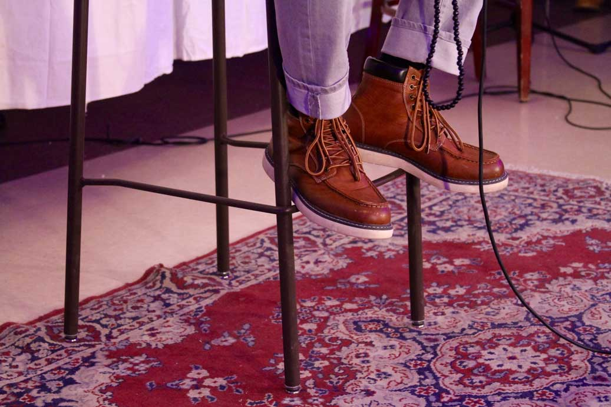
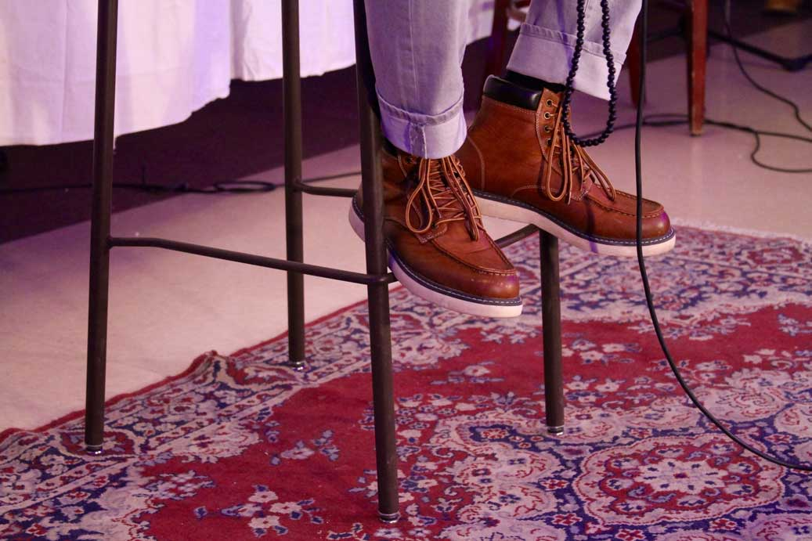

We need to fuck more. We need to eat our food slower and chew every morsel. We need to curse more expressively, stressing every single syllable. And we need to do so, if possible, in Italian.
Such was the advice of first-year Daniele Becker, whose stand-up performance at the Underground Collective’s debut showcase last Saturday provided a breath of lighthearted humor to an evening of raw, provocative student performances.
“Come As You Are,” a four-act showcase, featured 11 students performing spoken word poetry, stand-up, skits, song, and dance. Cobb Café was dressed like you’ve never seen it; strung with a haze of multicolored lights, the subterranean space was transformed into an elegant grotto packed to the brim with expectant ears. The tables were full, the walls lined with viewers.
As emcee and second-year Atrician Lumumba—a self-proclaimed “visionary” who goes by stage name Trish the Tyrant—advised the audience at the beginning of the show, “If you hear some shit you like, snap.” While the packed lounge often echoed with the sound of a hundred simultaneous snaps, the greater part of the night was charged with a complete and attentive silence.
The evening began with an invocation in Spanish, followed by French, Italian, and, finally, English: “Citizens of the world, come as you are. Citizens of the world, showcase your scars.” Undergraduates Claire Moore, Lucas Mathieu, Bryan Waterhouse, and Becker stood before a row of mics, taking turns to speak in their respective tongues and invite the audience into their world of the word. They called for unabashed vulnerability. They called for respect. They introduced the audience to the tone and expectations of spoken word poetry, joining hands at the end of the piece.
Third-year Payal Kumar took the floor next, alone at the mic to perform a spoken word poem called “facebook status poetry.” She attacked technophobic cynicism, encouraging the listener to acknowledge the momentous advantages of social media. Fourth-year Maira Khwaja followed Kumar with her fierce rendition of Margaret Atwood’s “The Female Body” before Becker and Mathieu broke the building tensions with a theatrical interlude; the script, the acting, and, above all, the pairing, were simple yet brilliant. The audience was too busy laughing to snap.
The laughter turned to sympathetic murmurs, however, when Ben Glover, donning a “Jesus was Black” T-shirt, concluded Act I with his rap “Black Skin White Skeleton,” dropping lines like “Black people get stopped and checked like my Nikes” and “If a bitch-nigga ever question my tenacity I track ‘em down and kill ‘em like the nigga from Assassin’s Creed.”
Act II came on strong with perhaps the most intense performance of the night. Chase Woods, sharply dressed in a suit and tie, dominated as Khwaja’s boss in a skit entitled “The Suitcase.” The audience watched in terror as a suffocating power struggle played out between a manipulative business executive and his 20-something intern. At the climax, the boss commands, “You should be thanking me, along with Jesus, for giving you another day!”
The bone-chilling vignette was uncomfortable and, for many UChicago students, perhaps too relatable. Now, at the audience’s moment of need, our funny Italian stepped in. Despite the tension still clinging to the air, Becker casually paced about the floor, shrugged his shoulders, and asked: Why do we work?
Mathieu followed Becker’s stand-up with a much more serious piece—a glorification of spoken word poetry called “The Medium is the Message”—before turning the mic over to Moore and Glover to perform “(Please) Remember Me,” a haunting gospel rap prefaced by trigger warnings of violence, murder, police brutality, and sexism. A wave of snaps faded into intermission, which served as a welcome break from the heat of the performance. Attendees stocked up on hot apple cider and carrot cupcakes while recharging their human batteries for part two.
At last, to the cheers of the crowd and a grand introduction by the Tyrant, the Underground Collective’s two founders, third-year Natalie Richardson and second-year Maddie “Bars” Anderson, graced the stage. They performed “Love Poem to Ourselves”—an endearing exploration of their own journeys through objectification and self-doubt to discover the meaning of womanhood. Ultimately, they declared in unison that “a woman is someone who isn’t afraid to write a love poem to herself.”
The rest of Act III explored the themes of doubt and mental illness, featuring performances by Moore, Anderson, and Kumar. In her second poem of the night, “Self & Self Doubt,” Kumar likened herself to a phoenix more often burned than rebirthed, clinging to a self-worth founded on GPA: “Being a three-point someone never feels enough.”
The fourth and final act reflected on the themes of violence and memory, featuring performances by Mathieu, Moore, Waterhouse, and Richardson. Mathieu opened his French poem, “TIC (technologies de l’information et de la communication),” by expressing his sympathy for the victims of the Paris attacks, practically spitting with passion throughout the piece. Moore matched Mathieu’s words with movement, pacing her leaps and bends to his skillful manipulation of intensity.
Then, Waterhouse, a thin white redhead, stepped onstage. In his poem “Family,” Waterhouse highlighted the hypocritical nature of open mics, telling of how his physical appearance initially made him afraid to identify as Latino or explore the spoken word world. He told of his mom from Brazil, his drunken father, and his cousin—who doesn’t check the closet for monsters but for her mom—explaining his evolution as a poet through the lens of family hardship.
Richardson had the honor of performing the final solo of the night, “Poem for Jacob, First Crush.” She wove a nostalgic tale of Halloween, matzah ball soup, and pet pythons, delivering one of the most touching lines of the night: “I’ve learned that love is a wide-mouthed snake, and I’ve got the pinpricks to prove it.”
Anderson, Waterhouse, and Woods joined Richardson on stage to close the showcase with a poem called “Misunderstandings,” speaking in unison, in pairs, shouting, cooing, and, at times, mechanically echoing one another as if they were one voice.
Within the low-lying confines of Cobb Café, the Underground Collective expressed pain, sparked change, and reaffirmed the beauty of free speech. While the individual topics of “Come As You Are” varied, many of the evening’s performances centered on themes that were hyper-aware—performers capitalizing yet meditating on the vehicle of spoken word poetry and language itself. The performers exhibited confident, professional showmanship, and the show itself, from marketing to final act, was expertly executed.
As Mathieu said in “The Medium is the Message,” “I know what I want to say, and I know what to do to say it. How about you?”
 
